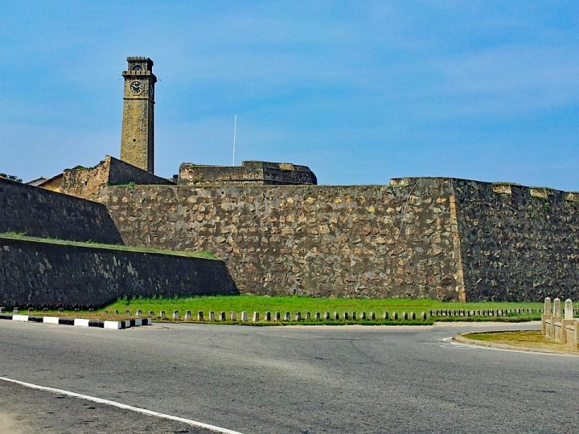

Yala
Yala national park is the second largest national park in Sri Lanka. This is in the Southern Province of Sri Lanka boarding the Indian ocean. This park consists of five blocks and two of them are open to the public. Yala was designated as a wildlife sanctuary in 1900. The park is best known for its variety of wild animals. It is important for the conservation of Sri Lankan elephants, Sri Lankan leopards, and aquatic birds.
Weligama
Weligama is a popular city in Sri Lanka, located on the island’s southern coast. The city of Weligama is a popular tourist destination both national and international. Weligama is a perfect place for fishing, surfing, and many other watersports like Weligama beach, diving, whale watching. Also, the Kushta raja gala statue is one of the historical popular tourist attractions of Weligama.
Unawatuna

Unawatuna is a coastal town in Galle district in Sri Lanka. It is famous for its beaches and coral reefs. Jungle beach is a small beach that looks like it is located in I middle of a jungle. In Unawatuna, you can explore underwater life through snorkeling, you can go surfing, enjoy plates of seafood, boat rides, scuba diving. Unawatuna is a great place to explore.
Hikkaduwa

Hikkaduwa is a small town located on the south coast of Sri Lanka. This is a perfect place to enjoy lots of watersports like surfing, snorkeling, whale watching, diving, swimming, riding glass boats, river safari, sailing. Also, Hikkaduwa is known for its coral gardens, beaches, crystal clear waters, and an active nightlife. This is one of the main tourist attractions places in Sri Lanka.
Galle Fort
This fort was built by the Portuguese in 1588 and declared a World Heritage Site in 1988. It is a historical, archaeological, and architectural monument that maintains a polished appearance even after more than 432 years. This fort has a great history and today has a multi-ethnic and multi-religious population. This fort is a beautiful traveling location that can give you an experience, you never forget.
Mirissa

Mirissa is in Matara district south coast of Sri Lanka. This is a town that is famous for its natural beaches. In here you can enjoy the beautiful beach, climb the parrot rock to watch a perfect view of sunrise and sunset, go whale and dolphin watching, snorkel on the Turtle Bay, or go surfing.
Tangalle
Tangalle is a large city located in Hambantota district, Southern Province, Sri Lanka. It is a popular holiday destination on the south coast. In here you can visit lots of historic places like Wewrukannala Vihara, Mulkirigala Raja Maha Vihara. Also, you can visit Kalametiya Bird Sanctuary, Hummanaya blowhole (the only known blowhole in Sri Lanka and considered to be the second-largest blowhole in the world), ad Parewella Natural Swimming Area.
Bentota

Bentota is a coastal town located in Galle District, Southern Province, Sri Lanka. You can enjoy Bentota by doing lots of things like paragliding, parasailing, watching dolphins, visiting Kosgoda Turtle hatchery, enjoying Bentota beach, etc. Also, you can visit Brief Garden which is designed by renowned and skilled Sri Lanka landscapes architecture Bevis Bawa and his brother architect Jeffry Bawa. It is a beautiful garden that screeches over five acres.
Udawalawe
Udawalawe is a small town located in Rathnapura in Sri Lanka. This town is the entry point to Udawalawe National Park which is famous for its high population of Asian elephants. Udawalawe has perfect places to camp, there are several rivers that make it look very much appealing in terms of camping. This is a good place if one is looking for an adventure and unforgettable experience.
TraveL Expert limited
Contact Us:
- Phone : 076 646 7933
- Email : travelexpert@gmail.com
- Facebook : travelexpert/www.facebook.com
- Twitter : Travel Expert